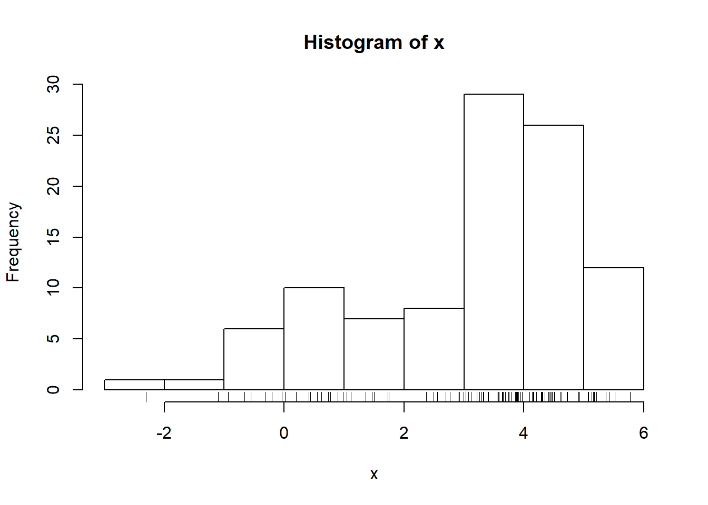
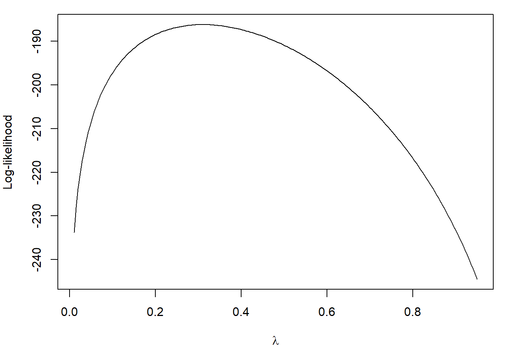
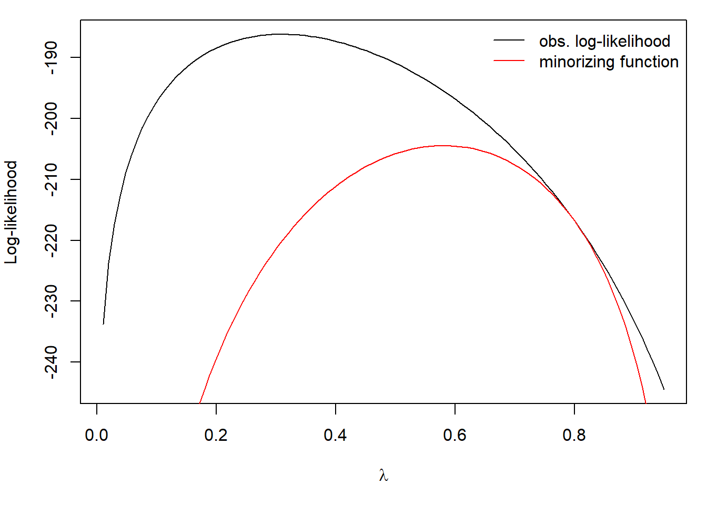
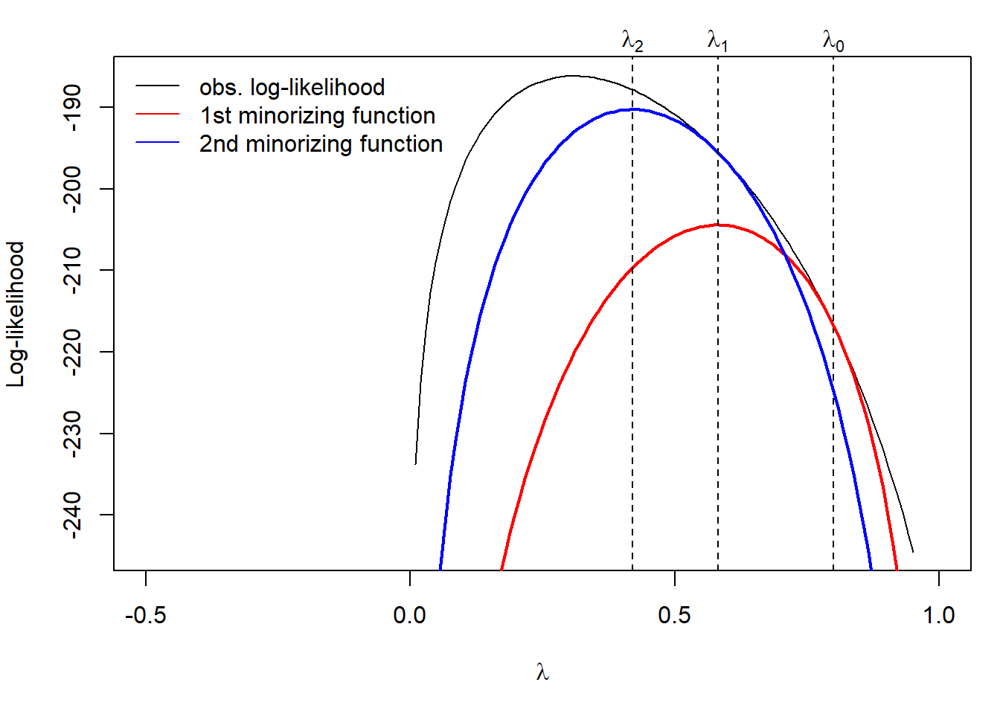

4.3 A Minorizing Function
One of the positive qualities of the EM algorithm is that it is very stable. Unlike Newton’s algorithm, where each iteration may or may not be closer to the optimal value, each iteratation of the EM algorithm is designed to increase the observed log-likelihood. This is the ascent property of the EM algorithm, which we will show later. This stability, though, comes at a price—the EM algorithm’s convergence rate is linear (while Newton’s algorithm is quadratic). This can make running the EM algorithm painful at times, particularly when one has to compute standard errors via a resampling approach like the bootstrap.
The EM algorithm is a minorization approach. Instead of directly maximizing the log-likelihood, which is difficult to evaluate, the algorithm constructs a minorizing function and optimizes that function instead. What is a minorizing function? Following Chapter 7 of Jan de Leeuw’s Block Relaxation Algorithms in Statistics a function \(g\) minorizes \(f\) over \(\mathcal{X}\) at \(y\) if
- \(g(x) \leq f(x)\) for all \(x\in\mathcal{X}\)
- \(g(y) = f(y)\)
In the description of the EM algorithm above, \(Q(\theta\mid\theta_0)\) is the minorizing function. The benefits of this approach are
The \(Q(\theta\mid\theta_0)\) is a much nicer function that is easy to optimize
Because the \(Q(\theta\mid\theta_0)\) minorizes \(\ell(\theta\mid y)\), maximizing it is guaranteed to increase (or at least not decrease) \(\ell(\theta\mid y)\). This is because if \(\theta_n\) is our current estimate of \(\theta\) and \(Q(\theta\mid\theta_n)\) minorizes \(\ell(\theta\mid y)\) at \(\theta_n\), then we have \[ \ell(\theta_{n+1}\mid y) \geq Q(\theta_{n+1}\mid\theta_n) \geq Q(\theta_n\mid\theta_n) = \ell(\theta_n\mid y). \]
The right-hand side of the above equation, the middle part of which is a function of \(\theta\), is our minorizing function. We can see that for \(\theta=\theta_0\) we have that the minorizing function is equal to \(\log f(y\mid\theta_0)\).
4.3.1 Example: Minorization in a Two-Part Mixture Model
We will revisit the two-part Normal mixture model from before. Suppose we have data \(y_1,\dots,y_n\) that are sampled independently from a two-part mixture of Normals model with density \[ f(y\mid\lambda) = \lambda\varphi(y\mid\mu_1,\sigma_1^2) + (1-\lambda)\varphi(y\mid\mu_2,\sigma_2^2). \] We can simulate some data from this model.
mu1 <- 1
s1 <- 2
mu2 <- 4
s2 <- 1
lambda0 <- 0.4
n <- 100
set.seed(2017-09-12)
z <- rbinom(n, 1, lambda0) ## "Missing" data
x <- rnorm(n, mu1 * z + mu2 * (1-z), s1 * z + (1-z) * s2)
hist(x)
rug(x)
For the purposes of this example, let’s assume that \(\mu_1,\mu_2,\sigma_1^2\), and \(\sigma_2^2\) are known. The only unknown parameter is \(\lambda\), the mixing proportion. The observed data log-likelihood is \[ \log f(y_1,\dots,y_n\mid\lambda) = \log \sum_{i=1}^n \lambda\varphi(y_i\mid\mu_1,\sigma^2_1) + (1-\lambda)\varphi(y_i\mid\mu_2,\sigma^2_2). \]
We can plot the observed data log-likelihood in this case with the simulated data above. First, we can write a function encoding the mixture density as a function of the data and \(\lambda\).
f <- function(x, lambda) {
lambda * dnorm(x, mu1, s1) + (1-lambda) * dnorm(x, mu2, s2)
}Then we can write the log-likelihood as a function of \(\lambda\) and plot it.
loglike <- function(lambda) {
sum(log(f(x, lambda)))
}
loglike <- Vectorize(loglike, "lambda") ## Vectorize for plotting
par(mar = c(5,4, 1, 1))
curve(loglike, 0.01, 0.95, n = 200, ylab = "Log-likelihood",
xlab = expression(lambda))
Note that the true value is \(\lambda = 0.4\). We can compute the maximum likelihood estimate in this simple case with
op <- optimize(loglike, c(0.1, 0.9), maximum = TRUE)
op$maximum[1] 0.3097435In this case it would appear that the maximum likelihood estimate exhibits some bias, but we won’t worry about that right now.
We can illustrate how the minorizing function works by starting with an initial value of \(\lambda_0 = 0.8\).
lam0 <- 0.8
minor <- function(lambda) {
p1 <- sum(log(f(x, lam0)))
pi <- lam0 * dnorm(x, mu1, s1) / (lam0 * dnorm(x, mu1, s1)
+ (1 - lam0) * dnorm(x, mu2, s2))
p2 <- sum(pi * dnorm(x, mu1, s1, log = TRUE)
+ (1-pi) * dnorm(x, mu2, s2, log = TRUE)
+ pi * log(lambda)
+ (1-pi) * log(1-lambda))
p3 <- sum(pi * dnorm(x, mu1, s1, log = TRUE)
+ (1-pi) * dnorm(x, mu2, s2, log = TRUE)
+ pi * log(lam0)
+ (1-pi) * log(1-lam0))
p1 + p2 - p3
}
minor <- Vectorize(minor, "lambda")Now we can plot the minorizing function along with the observed log-likelihood.
par(mar = c(5,4, 1, 1))
curve(loglike, 0.01, 0.95, ylab = "Log-likelihood",
xlab = expression(lambda))
curve(minor, 0.01, 0.95, add = TRUE, col = "red")
legend("topright", c("obs. log-likelihood", "minorizing function"),
col = 1:2, lty = 1, bty = "n")
Maximizing the minorizing function gives us the next estimate of \(\lambda\) in the EM algorithm. It’s clear from the picture that maximizing the minorizing function will increase the observed log-likelihood.
par(mar = c(5,4, 2, 1))
curve(loglike, 0.01, 0.95, ylab = "Log-likelihood",
xlab = expression(lambda), xlim = c(-0.5, 1),
ylim = c())
abline(v = lam0, lty = 2)
mtext(expression(lambda[0]), at = lam0, side = 3)
curve(minor, 0.01, 0.95, add = TRUE, col = "red", lwd = 2)
op <- optimize(minor, c(0.1, 0.9), maximum = TRUE)
abline(v = op$maximum, lty = 2)
lam0 <- op$maximum
curve(minor, 0.01, 0.95, add = TRUE, col = "blue", lwd = 2)
abline(v = lam0, lty = 2)
mtext(expression(lambda[1]), at = lam0, side = 3)
op <- optimize(minor, c(0.1, 0.9), maximum = TRUE)
abline(v = op$maximum, lty = 2)
mtext(expression(lambda[2]), at = op$maximum, side = 3)
legend("topleft",
c("obs. log-likelihood", "1st minorizing function", "2nd minorizing function"),
col = c(1, 2, 4), lty = 1, bty = "n")
In the figure above, the second minorizing function is constructed using \(\lambda_1\) and maximized to get \(\lambda_2\). This process of constructing the minorizing function and maximizing can be repeated until convergence. This is the EM algorithm at work!
4.3.2 Constrained Minimization With and Adaptive Barrier
The flip side of minorization is majorization, which is used in minimization problems. We can implement a constrained minimization procedure by creating a surrogate function that majorizes the target function and satisfies the constraints. Specifically, the goal is to minimize a funtion \(f(\theta)\) subject to a set of constraints of the form \(g_i(\theta) \geq 0\) where \[ g_i(\theta) = u_i^\prime \theta - c_i \] and where \(u_i\) is a vector of the same length as \(\theta\), \(c_i\) is a constant, and \(i=1,\dots,\ell\). These constraints are linear constraints on the parameters. Given the constraints and \(\theta_n\), the estimate of \(\theta\) at iteration \(n\), we can construct the surrogate function, \[ R(\theta\mid\theta_n) = f(\theta) - \lambda \sum_{i=1}^\ell g_i(\theta_n)\log g_i(\theta)-u_i^\prime\theta \] with \(\lambda > 0\).